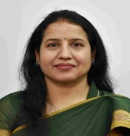

|
Dr. Meenakshi Tripathi
Education Qualification:
1) Bachelor of Engineering (B.E.), 2003, Computer Science & Engg., Rajasthan University, Jaipur
2) M.Tech., 2005, Computer Science & Engg., Banasthali Vidyapith, Banasthali
3) PhD, 2014, Computer Science & Engineering, MNIT Jaipur
Professional Experience:
1) Associate Professor, MNIT Jaipur, May 2018 Onwards
2) Assistant Professor, MNIT Jaipur, March 2008 to May 2018
3) Assistant Professor, CTAE, MPUAT, Udaipur, March 2005 – March 2008
Research :
My research interests include Information Security, Wireless Networks, Software Defined Networks, and Internet of Things (IoT). I have successfully guided multiple research scholars and continue to contribute to these domains through various funded projects and publications.
Email /
LinkedIn /
Scholar /
ORCID /
Scopus
|

|
Research Guidance
B. Tech Projects:
34 Batches Completed, 2 Batches Ongoing
M. Tech Dissertations:
31 Completed, 2 Ongoing
Awarded Ph.D. Theses:
4 Completed, 5 Ongoing
-
Ajay Nehra: Architectural Improvements for Secure SDN Topology Discovery, MNIT Jaipur, 2019
-
Jyoti Gajrani: Integrated Static and Dynamic Analysis Techniques for Improved Analysis of Android Apps, MNIT Jaipur, 2020
-
Anugrah Jain: Scalable, Reconfigurable Routing for Fault-Tolerant NoC, MNIT Jaipur, 2020
-
Ankur Gupta: Secure and Lightweight Device-to-Device Authentication Schemes in Internet of Things (IoT), MNIT Jaipur, 2022
Research & Development Projects
| S.No |
Project Title |
PI & Collaborators |
Sponsoring Agency |
Outlay (Lacs) |
Status |
| 01 |
A survey-based report of ICT tools for children with ASD |
Dr. Meenakshi Tripathi (PI), Dr. Sushant Upadhyay, Dr. Preeti Bhatt |
DST, Delhi |
10.6 |
Ongoing (2023-2024) |
| 02 |
MobiSStick: Mobile Enabled Smart Stick for Visually Impaired Person |
Dr Meenakshi Tripathi, Dr. Amit Kumar (IIIT Kota), Prof. M. S. Gaur (IIT Jammu) |
SYST scheme of SEED Division, Delhi |
19 |
Ongoing (2017-2023) |
| 03 |
Low cost interactive teaching aid in a flipped classroom for Indian academia |
Dr. Lava Bhargava (MNIT Jaipur), Dr. Meenakshi Tripathi (Co-PI) |
DST Rajasthan |
8 |
Completed (2017-2020) |
| 04 |
Information Security Education Awareness – Phase II (ISEA-II) |
MS Gaur, Vijay Laxmi, Meenakshi Tripathi (Co-PI) |
MEITY |
100 |
Ongoing (2017-2023) |
| 05 |
Reflection Aware ICC Analysis Framework for Android Apps |
Vijay Laxmi, MS Gaur, Meenakshi Tripathi (Co-PI) |
CEFIPRA (DST-CNRS) |
16 |
Completed (2017-2020) |
Consultancy Project
| Project |
Role |
Agency |
Sponsor |
Amount (Lacs) |
Status |
| Third Party Inspection under Smart Raj Project (Phase – I) |
CO-PI |
RUDSICO |
State Government of Rajasthan |
3.88 |
Completed |
Conferences/Seminars/Workshops Organized
| Category |
Title |
Duration |
Funding Agency |
Position |
| 1-Week Summer School |
Artificial Intelligence and Machine Learning
for Engineering and Social Science Research
|
4-8 Sept. 2023 |
IEEE CIS, USA |
General Chair |
| 2-Week FDP |
Supply Chain Management and Logistics (Under PM Gati Shakti Scheme) |
6-17 March 2023 |
AICTE ATAL Academy, India under PM Gati Shakti Scheme |
Co-Coordinator |
| 2-Week FDP |
Advanced Computational Intelligence Techniquesfor Engineering and
Science Applications
|
9-20 Jan 2023 |
AICTE ATAL Academy, India |
Co-Coordinator |
| 1-Week FDP |
IEEE CIS Summer School on Research Trends in Artificial Intelligence and Machine Learning |
6-10 Dec 2022 |
IEEE CIS, USA |
Organizing Chair |
| 2-Weeks FDP |
Machine Learning for Computer Vision |
21 Feb - 4 March 2022 |
EICT Academy |
Program Coordinator |
| National Workshop |
Data Science for All |
12.23 April 2021 |
EICT Academy |
Program Coordinator |
| International Conference |
ICDLAIR 2019 |
7-8 Dec 2019 |
IIIT Uttrakhand |
Chairperson |
| National Workshop |
Cyber Security |
17-21 Dec 2019 |
ATAL Academy |
Coordinator |
| National Workshop |
Technical Writing With Advanced Computer Tools: Hands-On Training |
14-18 May 2019 |
MHRD |
Coordinator |
| Sort Term Course |
Cyber Security Awareness and Cyber Security Challenge Competition |
09-13 July 2018 |
TEQIP |
Coordinator |
| Short Term Course |
Communication Skills |
14-18 May 2018 |
TEQIP |
Coordinator |
| National Workshop |
Latex and Technical Writing |
24-28 Jan 2018 |
TEQIP |
Coordinator |
| National Workshop |
Faculty Development Program for Software Defined Networks |
18-22 March 2016 |
TEQIP |
Coordinator |
Administrative Responsibilities
• “Faculty Coordinator Classical Dance and Music Club” MNIT Jaipur Since Oct. 2022
• “Faculty Coordinator Placement” MNIT Jaipur Since Feb. 2022
• "Member, Board of Studies" in Central University of Rajasthan, Jaipur From December 2021 to till date
• “Expert Panel” in UP Public Service Commission since 2019 (not in website)
• “Dean, BoS-Software” in Rajasthan ILD Skills University, Jaipur from 07-06-2019 to till date
• “Convener, BoS-Software” in Rajasthan ILD Skills University, Jaipur from 07-06-2019 to 20-01-2021
• Program Advisor of M Tech (IS) in MNIT from 10-07-2019 to 27-08-2021 (Added now in biodata)
• Warden in MNIT from 13-11-2019 to 31-08-2020 (Added now in biodata)
• “External Member, Curriculum Development Committee” in Kota University, Kota from 15-07-2019 to till date (not in website)
• “Senate Member” Indian Institute of Information Technology (IIIT Kota) from 2015-2020 (not in website)
• “Chairperson” in Computer Society of India, Jaipur Chapter from 02-04-2018 to April 2020 (not in website)
• “DUGC Convener” in Department of CSE, MNIT Jaipur from 01-07-2019 to 01-07-2021
• "Convener DUGC and Adjunct Faculty” in IIIT Kota from 01-07-2015 to 30-06-2016
• “Time Table Coordinator” in Dept. of CSE, MNIT from 01-04-2014 to 30-04-2015
List of Outreach Activity ( 2023 onwards)
List of Awards
Open Source Contributions
Contributed to DroidBench with 10 apps for inter-component communication in combination with reflections.
DroidBench is an open test suite for evaluating the effectiveness of taint-analysis tools specifically for Android apps.
View on GitHub
MOOC Development
Developed a course on "Cyber Security and Digital Forensics"
View Course
Professional Memberships
Conferences, Seminars and Workshops organised
Expert Talks
List of Publications
2024
- Detecting Sybil Attacks in VANET: Exploring Feature Diversity and Deep Learning Algorithms with Insights into Sybil Node Associations
- Intelligent defense strategies: Comprehensive attack detection in VANET with deep reinforcement learning
- An integrated deep learning model for Ethereum smart contract vulnerability detection
2023
- Lav Upadhyay, Meenakshi Tripathi, Feature Selection Based Evaluation for Network Intrusion Detection System with Machine Learning Methods on CICIDS-2017, 5th International Conference on Communication and Intelligent Systems (ICCIS 2023), MNIT Jaipur 16-17 December 2023
- Shashvat Sharma, Meenakshi Tripathi, Harish Kumar Sahu, Ashish Karan, A Post-Quantum End-to-End Encryption Protocol, International Conference on Advanced Networks and Telecommunications Systems (ANTS-2023), MNIT Jaipur 17-20 December 2023
- Rishank Goyal, Meenakshi Tripathi, Shubham Tomar, GasOptiScan: Unveiling Gas-Inefficient Smart Contracts via Loop Fusible Pattern Detection for Enhanced Cost Efficiency, International Conference on Emerging Trends in Networks and Computer Communications (ETNCC-2023)
- Rajat Shri Shrimal, Jyoti Gajrani, Vinesh Kumar Jain, Meenakshi Tripathi, Dharm Singh Jat, Detection of Ransomware Attacks Using Weight of Evidence Technique, International Conference on Emerging Trends in Networks and Computer Communications (ETNCC-2023), 10.1109/ETNCC59188.2023.10284928
- Vikas Kumar Jain, Meenakshi Tripathi, Multi-Objective Approach for Detecting Vulnerabilities in Ethereum Smart Contracts, International Conference on Emerging Trends in Networks and Computer Communications (ETNCC-2023), 10.1109/ETNCC59188.2023.10284955
- Vikas Kumar Jain, Meenakshi Tripathi, An integrated deep learning model for Ethereum smart contract vulnerability detection, International Journal of Information Security, pg. 1-19, 2023
- Akhil Pariyarth, Shubham Tomar ,Meenakshi Tripathi. Efficient Privacy-Preserving Authentication using Blockchain for VANET, 16th International Conference on COMmunication Systems & NETworkS (COMSNET-2023), 423-426, IEEE
- 8 Meenakshi Tripathi, Shadab Khan and Sangharatna Godboley: Comparison between Performance of Constraint Solver for Prediction Model in Symbolic Execution, International Conference on Artificial Intelligence of Things (ICAIoT)-2023
2022
- Kawaldeep Kaur, Shubham Tomar, Meenakshi Tripathi. Gas Fee Reduction by Detecting Loop Fusible Patterns in Ethereum Smart Contract, 16th IEEE International Conference on Advanced Networks and Telecommunications Systems (ANTS)
- R. Sultana, J Grover, M Tripathi: A Data-Centric and Dynamic-Range based Misbehavior Detection Approach for VANET, TENCON-2022
- S. K Gupta, M Tripathi, J Grover: Hybrid optimization and deep learning based intrusion detection system, Computers and Electrical Engineering 100, 107876
- sunil Kumar, Jyoti Gajrani and Meenakshi Tripathi: Fuzzing REST APIs for Bugs: An Empirical Analysis, FICTA-2022 (Presented)
- R. Sultana, J Grover, J Meghwal, M Tripathi: Exploiting machine learning and deep
learning models for misbehavior detection in VANET, Journal of Information Security and Applications, 1-15
- A Gupta, M Tripathi, S Muhuri, G Singal, N Kumar: A secure and lightweight anonymous mutual authentication scheme for wearable devices in Medical Internet of Things,Journal of Information Security and Applications 68, 103259
2021
- Rukhsar Sultana, Jyoti Grover, Meenakshi Tripathi: Security of SDN-based vehicular ad hoc networks: State-of-the-art and challenges. Vehicular communications
- Shalin Deval, Meenakshi Tripathi, Bruhadeshwar Bezawada: X-Phish: Days of Future Past: Adaptive & Privacy Preserving Phishing Detection
- Subham Kumar Gupta, Meenakshi Tripathi, Jyoti Grover: Towards an Effective Intrusion Detection System using Machine Learning techniques: Comprehensive Analysis and Review. Presented in 9th International Conference on Reliability, Infocom Technologies and Optimization (Trends and Future Directions) (ICRITO).
- Leveraging LSTM-RNN combined with SVM for Network Intrusion Detection.
- Comparative Study of Object Recognition Algorithms for Effective Electronic Travel Aids.
2020
- Jyoti Gajrani, Vijay Laxmi, Meenakshi Tripathi, Manoj Singh Gaur, Akka Zemmari, Mohamed Mosbah, Mauro Conti: Chapter Three - Effectiveness of state-of-the-art dynamic analysis techniques in identifying diverse Android malware and future enhancements. Adv. Comput. 119: 73-120 (2020)
- Jyoti Gajrani, Umang Agarwal, Vijay Laxmi, Bruhadeshwar Bezawada, Manoj Singh Gaur Meenakshi Tripathi, , Akka Zemmari : EspyDroid+: Precise reflection analysis of android apps, Comput. Secur. 90: 101688 (2020)
- A Gupta, M Tripathi, A Sharma: A provably secure and efficient anonymous mutual authentication and key agreement protocol for wearable devices in WBAN, Computer Communications 160, 311-325
- Rashika Joshi, Meenakshi Tripathi, Amit Kumar, Manoj Singh Gaur: Object Recognition and Classification System for Visually Impaired, International Conference on Communication and Signal Processing (ICCSP), Pg. No: 1568-1572, 2020
- Jyoti Gajrani, Meenakshi Tripathi, Vijay Laxmi, Gaurav Somani, Akka Zemmari, Manoj Singh Gaur: Vulvet Vetting of Vulnerabilities in Android Apps to Thwart Exploitation, Digital Threats: Research and Practice, Vol 1, Issue-2, Pg. No. 1-25
- Anugrah Jain, Vijay Laxmi, Meenakshi Tripathi, Manoj Singh Gaur, Rimpy Bishnoi: TRACK: An algorithm for fault-tolerant, dynamic and scalable 2D mesh network-on-chip routing reconfiguration, Integration by Elsevier
- Rukhsar Sultana, Jyoti Grover, Meenakshi Tripathi, "Security of SDN-Based Vehicular Ad Hoc Networks: State-of-the-Art and Challenges" , Vehicular Communications (Elsevier) Volume :27 / 100284 / 2020 DOI: https://doi.org/10.1016/j.vehcom.2020.100284 (not in biodata added now)
- A novel framework for misbehavior detection in SDN-based VANET( bio data added now)
2019
- 1 Ajay Nehra, Meenakshi Tripathi, Manoj Singh Gaur,, Ramesh Babu Battula, Chagan Lal ,SLDP: A secure and lightweight link discovery protocol for software defined networking , Computer Networks Volume :150 / 102-116 / 2019
- Shivam Anand, Amit Kumar, Meenakshi Tripathi, Manoj Singh Gaur ,Human Face Detection Enabled Smart Stick for Visually Impaired People , Data Science and Big Data Analytics Volume :16 / 277-289 / 2019 ISBN: 978-981-10-7640-4
-
Anugrah Jain, Vijay Laxmi, Meenakshi Tripathi, Manoj Singh Gaur, Rimpy Bishnoi ,S2DIO: an extended scalable 2D mesh network-on-chip routing reconfiguration for efficient bypass of link failures , The Journal of Supercomputing Volume :75 / 1-27 / 2019 ISBN: 0920-8542
- Ankur Gupta, Meenakshi Tripathi, Tabish Jamil Shaikh, Aakar Sharma ,A lightweight anonymous user authentication and key establishment scheme for wearable devices , Computer Networks Volume :149 / 29-42 / 2019
-
Harshit Kr. Agarwal ; Meenakshi Tripathi: OLWS: Optimized Light Weight Secure Clustering protocol for Wireless Sensor Networks, 4th International Conference on Information Systems and Computer Networks (ISCON), 21-22 Nov. 2019, 10.1109/ISCON47742.2019.9036303
- Smart MM: Smart Movie Management System(not in biodata added now) (not in website)
2018
- Prashant Kumar, Meenakshi Tripathi, Ajay Nehra, Mauro Conti, Chhagan Lal: SAFETY-Early detection and mitigation of TCP SYN flood utilizing entropy in SDN , IEEE Transactions on Network and Service Management Volume :15 / 1545-1559 / 2018
- Ajay Nehra, Meenakshi Tripathi, Manoj Singh Gaur, Ramesh Babu Battula, Chhagan Lal : TILAK- A token‐based prevention approach for topology discovery threats in SDN , International Journal of Communication Systems Volume :31 / 3781 / 2018
- Himanshu Sharma, Meenakshi Triapthi, Amit Kumar, Manoj singh gaur:Embedded Assistive Stick for Visually Impaired Persons, IEEE 9th International Conference on Computing, Communication and Networking Technologies (ICCCNT 2018) by IEEE at Bangalore / / 2018
- Ankur Gupta, Meenakshi Tripathi,Poster: A Lightweight Mutually Authenticated Key-Agreement Scheme for Wireless Body Area Networks in Internet of Things Environment ,24th Annual International Conference on Mobile Computing and Networking by ACM at New Delhi / 804-806 / 2018
- Arti Mahore, Meenakshi Tripathi: Detection of 3D Mask in 2D Face Recognition System Using DWT and LBP, 2018 IEEE 3rd International Conference on Communication and Information Systems by IEEE at Singapore / 18-22 / 2018
- Unraveling reflection induced sensitive leaks in Android apps(not in biodata added now) (not in website)
- Secure and Energy-Efficient Routing for Cluster-Based Wireless Sensor Networks(not in biodata added now) (not in website)
- Resource allocation at MAC to provide QoS for Cognitive Radio Networks(not in biodata added now)
2017
- Meenakshi Tripathi, Manoj Singh Gaur Vijay Laxmi R B Battula: Balanced energy routing protocol for clustered wireless sensor network, Int. J. of Information and Communication Technology, Inderscience Volume :11 / 396 - 411 / 2017
- Gaurav Singal, Vijay Laxmi, Manoj Singh Gaur, Swati Todi, Vijay Rao, Meenakshi Tripathi, Riti Kushwaha: Multi-constraints link stable multicast routing protocol in MANETs, Ad hoc Networks Volume :63 / 115-128 / 2017
- Ajay Nehra, Meenakshi Tripathi, Manoj Singh Gaur: Global View in SDN: Existing Implementation, Vulnerabilities & Threats, 10th International Conference on Security of Information and Networks by ACM at Jaipur / 303-306 / 2017
- Jyoti Gajrani, Meenakshi Tripathi, Vijay Laxmi, Manoj Singh Gaur, Mauro Conti, Muttukrishnan Rajarajan: sPECTRA: A Precise framEwork for Analyzing CrypTographic vulneRabilities in Android Apps, 2017 14th IEEE Annual Consumer Communications & Networking Conference (CCNC) by IEEE at Las Vegas, NV, USA / 854-860 / 2017
- Ajay Nehra, Meenakshi Tripathi, MS Gaur: FICUR: Employing SDN Programmability to Secure ARP, 2017 IEEE 7th Annual Computing and Communication Workshop and Conference (CCWC) by IEEE at Las Vegas, NV, USA / 1-8 / 2017
- Sharang Sharma, Manind Gupta, Amit Kumar, Meenakshi Tripathi, Manoj Singh Gaur : Multiple Distance Sensors Based Smart Stick for Visually Impaired People, 2017 IEEE 7th Annual Computing and Communication Workshop and Conference (CCWC) by IEEE at Las Vegas, NV, USA / 1-5 / 2017
-
Meenakshi Tripathi, Kalpana Naidu, Mintu Biswas: Energy Efficient Semi Grid Based Clustering in Heterogeneous Wireless Sensor Network, IEEE International Conference on Wireless Communications, Signal Processing and Networking (WiSPNET) by IEEE at Chennai, India / 278-282 / 2017
-
Jyoti Gajrani, Li Li, Vijay Laxmi, Meenakshi Tripathi, Manoj Singh Gaur, Mauro Conti : Detection of Information Leaks via Reflection in Android Apps, Asia Conference on Computer and Communications Security by ACM at Abu Dhabi, UAE / 911-913 / 2017
-
Anugrah Jain, Vijay Laxmi, Meenakshi Tripathi, Manoj Singh Gaur, Rimpy Bishnoi : Performance-Enhanced D^2-LBDR for 2D Mesh Network-on-Chip, International Symposium on VLSI Design and Test by Springer at Roorkee, India / 313-323 / 2017
-
Ajay Nehra, Meenakshi Tripathi, MS Gaur: Requirement Analysis for Abstracting Security in Software Defined Network, 2017 8th International Conference on Computing, Communication and Networking Technologies (ICCCNT) by IEEE at Delhi / 1-8 / 2017
- Jyoti Gajrani, Vijay Laxmi, Meenakshi Tripathi, Manoj S Gaur, Daya Ram Sharma, Akka Zemmari, Mohamed Mosbah, Mauro Conti: Unraveling Reflection Induced Sensitive Leaks in Android Apps, International Conference on Risks and Security of Internet and Systems by Springer at France / 49-65 / 2017
2015
- Monika Sharma, Dinesh Gopalani, Meenakshi Tripathi: An Approach for Predicting Related Word for the Hindi Language , International Journal of Computer Applications Volume :123 / 29-34 / 2015 ISBN: 0975-8887
- Jyoti Gajrani, Jitendra Sarswat, Meenakshi Tripathi, Vijay Laxmi, Manoj Singh Gaur, Mauro Conti: A Robust Dynamic Analysis System Preventing SandBox Detection by Android Malware, 8th International Conference on Security of Information and Networks by ACM at Sochi, Russia / 290-295 / 2015
- Battula Ramesh Babu, M Tripathi, MS Gaur, D Gopalani, D Singh Ja: Cognitive Radio Ad-Hoc Networks: Attacks and Its Impact, International Conference on Emerging Trends in Network and Computer Communication (ETNCC 2015) by IEEE at Namibia / 125-130 / 2015
- Ramesh babu B, Manoj Singh Gaur, Dinesh Gopalani, M Tripathi: Spectrum Aware Distance Utilization Routing Protocol for Cognitive Radio Network, 12 th IEEE MICC 2015 by IEEE at Kuching, Malaysia / 1-7 / 2015
2014
- Ramesh babu B, Dinesh Gopalani, Manoj Singh Gaur, Meenakshi Tripathi: DAU- Distance-Utilization Routing Protocol for Cognitive Radio Wireless Mesh Networks, 2014 Annual IEEE India Conference (INDICON) by IEEE at Pune, India / 1-6 / 2014
- Jagadeesh Kakarla, Banshidhar Majhi, Ramesh Babu Battula, Tripathi, M: A Multi-Channel MAC Protocol for Actor-Actor Coordination in WSAN, TENCON by IEEE at Bangkok, Thailand / 1-6 / 2014
- Security Challenges in Wireless Sensor Network(not in website)
2013
- Meenakshi Tripathi, MS Gaur, V Laxmi, P Sharma: Detection and countermeasure of node misbehaviour in clustered wireless sensor network, Hindwai ISRN Sensor Network Volume :2013 / 1-9 / 2013
-
Meenakshi Tripathi, M.S. Gaur, V. Laxmi , P. Sharma: Detection and Removal of Misbehaviour Nodes from Clustered Wireless Sensor Network , Hindwai ISRN Sensor Network Volume :2013 / 9 / 2013(not in google scholar)
- Meenakshi Tripathi, Manoj Singh Gaur, Vijay Laxmi: Comparing the impact of black hole and gray hole attack on LEACH in WSN , Procedia Computer Science Volume :19 / 1101-1107 / 2013
- M Tripathi, MS Gaur, V Laxmi, RB Battula: Energy Efficient LEACH-C Protocol for Wireless Sensor Network, Third International Conference on Computational Intelligence and Information Technology (CIIT 2013) by IET Digital Library at Mumbai, India / 402-405 / 2013
- Meenakshi Tripathi, M.S. Gaur, V. Laxmi: A Novel Attack Simulation on LEACH in WSN, International Conference on Advance Research Engineering and Technology by K L University at Vijaywada / 140-143 / 2013(not in google scholar)
- Meenakshi Tripathi, M.S. Gaur, V. Laxmi: Simulating Snooze Attack on LEACH in WSN" Third International Conference on Computer Science, Engineering and Applications by AIRCC at Delhi / 393-399 / 2013
-
Meenakshi Tripathi, M.S. Gaur, V. Laxmi: Comparing the Impact of Black Hole and Gray Hole Attack on LEACH in WSN, International Symposium on Intelligent Systems Techniques for Ad Hoc and Wireless Sensor Networks by Elsevier at Canada / 1101-1107 / 2013
- Meenakshi Tripathi, M.S. Gaur, V. Laxmi and R.B. Battula: Energy Efficient LEACH-C Protocol for Wireless Sensor Network, International Conference on Information Technology in Signal and Image Processing (iTSiP) by IET Digital Library at Mumbai / 46-51 / 2013
- Meenakshi Tripathi, M.S. Gaur, V. Laxmi and R.B. Battula: Energy Efficient Clustered Routing for Wireless Sensor Network, IEEE 9th International Conference on Mobile Ad-Hoc and Sensor Networks by IEEE at Dalian, China / 330-335 / 2013
2012
- Meenakshi Tripathi, M.S. Gaur, V. Laxmi: Analysis of effects of Mobility and Active Route Timeout between Sensor Nodes in Wireless Sensor Networks, Special Issue of International Journal of Computer Applications on Wireless Communication and Mobile Networks Volume :5 / 22-25 / 2012
- Vinod Kumar Jatav, Meenakshi Tripathi, MS Gaur, Vijay Laxmi: Wireless sensor networks: Attack models and detection , Proceedings of IACSIT Hong Kong Conferences Volume :30 / 144-150 / 2012
- Meenakshi Tripathi, Rohit K. Batwara, M.S. Gaur,V.Laxmi: An Approach for Prolonging the Life Time of Wireless Sensor Network, 2012 International Conference on Information and Computer Networks by IACSIT Press Singapore at Singapore / 264-268 / 2012
|
|
{kind=link}